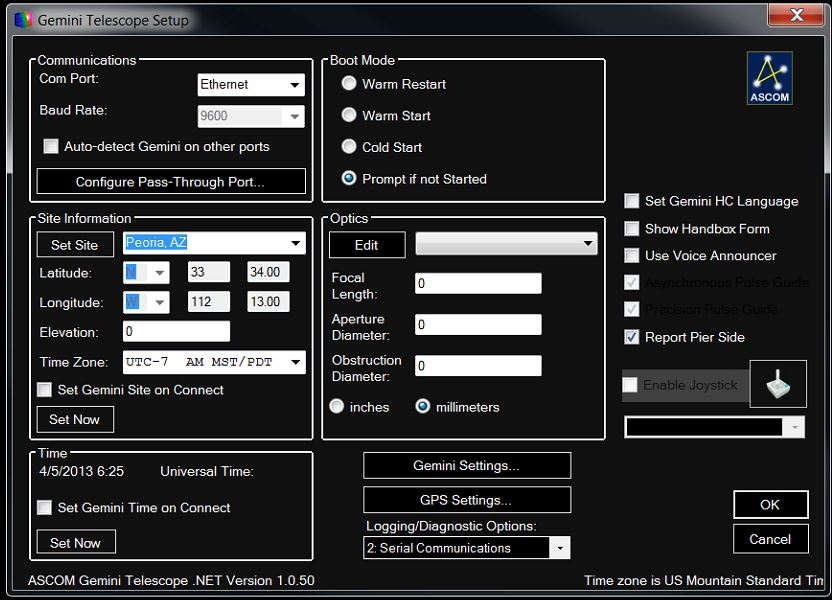
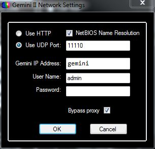
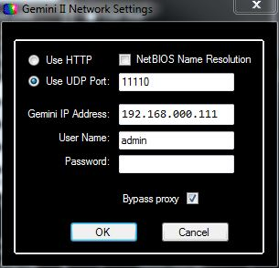

First Click on the Gemini-2 Icon on your Screen
First Click on the Gemini-2 Icon on your Screen
Connecting ASCOM Driver Ethernet interface of Gemini 2 |
This guide will help you get the Ethernet connection working with the ASCOM Gemini.net driver. Please note that this guide now has been added to section 5 of the Gemini.net ASCOM driver manual. |
Advantages of using Ethernet over other connections interfaces.
|
|
Before we get started, You must be able to access the
web interface with a web browser. If you
cannot do that, then you will not be able to get the ASCOM Gemini.net
driver to connect via Ethernet. Clicking on the address above will
test your Ethernet connectivity. (The address above uses
http://gemini/ and only works if netbios is
working on your system. Otherwise use the IP address shown on your
hand controller (Menu-->System-->Network-->IP Address.) The default is
192.168.0.111. You must have the Gemini-2 powered up also. This
is only a test to make sure the Ethernet connection is working properly.
It has nothing to do with the actual ASCOM to Ethernet Driver. If you passed the above test, lets get started. Now these instructions only cover configuring the Ethernet in the ASCOM Gemini.net driver. You will need to see the HELP guide included inside the ASCOM driver which covers most everything else. Just use the HELP or Press F1 - It will bring up the help guide as a PDF. To find it select Setup, the Help is displayed in the third group down. Selecting it will bring up the Help PDF file also. |
|
1.
First Click on the Gemini-2 Icon on your Screen
|
|
 The above setup menu is what you will get if the Gemini-2 has not been detected. Notice you can still see Asynchronous Pulse Guide and Precision Pulse Guide. But if the Gemini-2 has been detected, you will get the menu below. Asynchronous Pulse Guide and Precision Pulse Guide, are not shown. This is because the Gemini.net driver sets them automatically. 
|
|
 NetBIOS Selected |
OR |  NetBIOS Not Selected |
|
| Now these instructions only deal with the Ethernet portion of the ASCOM Gemini.net driver. See The ASCOM HELP pages that is included in the driver it self for the rest. Pressing F1 when the ASCOM Gemini Driver is up will bring up the Help. |
 On this menu click on the "SETUP" at the bottom Right
of the MENU. This will bring up the next pop-up menu.
On this menu click on the "SETUP" at the bottom Right
of the MENU. This will bring up the next pop-up menu.